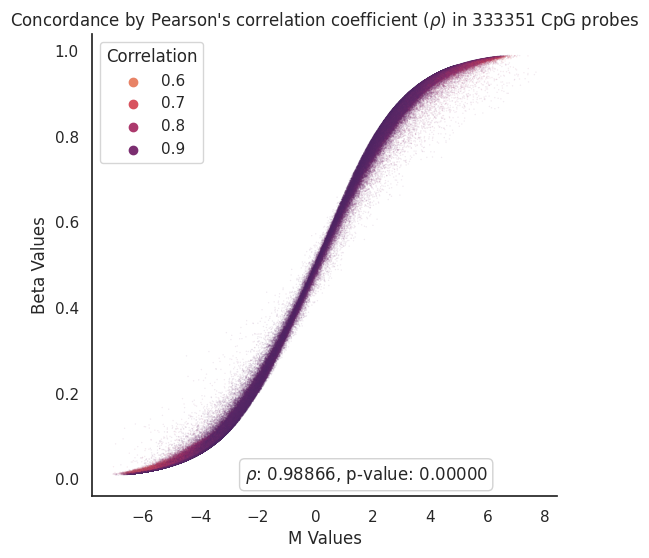
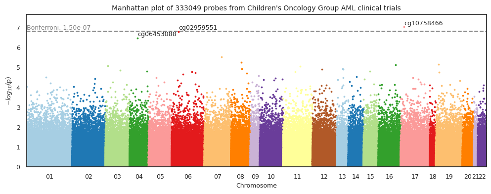

CoxPH-EWAS unadjusted with overall survival as outcome#
Load and process clinical data#
Show code cell source
import pandas as pd
input_path = '../Data/Intermediate_Files/'
clinical_data_path = '../Data/Raw_Data/Clinical_Data/'
output_path = '../Data/Processed_Data/'
df_methyl = pd.read_pickle(
input_path+'2_MethylData_Processing_Output.pkl')
print(
f' Dataset (df) contains {df_methyl.shape[1]} columns (5mC nucleotides/probes) and {df_methyl.shape[0]} rows (samples).')
# Import functions to clean up clinical data
from FM_Functions.Clinical_Data_CleanUp import *
# Call functions to merge, index and clean clinical data files
labels_0531 = clean_cog (merge_index_0531())
labels_1031 = clean_cog (merge_index_1031())
labels_aml05 = clean_aml05 (merge_index_aml05())
labels_beataml = clean_beataml (merge_index_beataml())
labels_amltcga = clean_amltcga (merge_index_amltcga())
labels_nordic_all = clean_nordic_all(merge_index_nordic_all())
labels_mds_taml = clean_mds_taml (merge_index_mds_taml())
labels_all_graal = clean_all_graal (merge_index_all_graal())
labels_target_all = clean_target_all(merge_index_target_all())
# Combine all clinical data labels into one dataframe
labels_combined = pd.concat([labels_aml05, labels_beataml,
labels_0531, labels_amltcga, labels_1031,
labels_nordic_all, labels_mds_taml,
labels_all_graal,labels_target_all], axis=0, join='outer')
# Remove samples that are not in the methyl dataset
df_labels = labels_combined.loc[labels_combined.index.isin(df_methyl.index)]
Dataset (df) contains 333352 columns (5mC nucleotides/probes) and 3330 rows (samples).
Remove Samples based on Certain Clinical Features#
Select samples from AAML1031, 0531, and 03P1 clinical trials#
Show code cell source
df1 = df_labels[df_labels['Clinical Trial'].isin(['AAML0531', 'AAML1031', 'AAML03P1'])]
print(
f'{df_labels.shape[0]-df1.shape[0]} samples were removed. {df1.shape[0]} samples remaining.')
2049 samples were removed. 1281 samples remaining.
Select diagnostic bone marrow samples only#
Show code cell source
df2 = df1[df1['Sample Type'].isin(
['Diagnosis', 'Primary Blood Derived Cancer - Bone Marrow'])]
print(
f'{df1.shape[0]-df2.shape[0]} samples were removed. {df2.shape[0]} samples remaining.')
350 samples were removed. 931 samples remaining.
Remove duplicate samples#
Show code cell source
df3 = df2[~df2['Patient_ID'].duplicated(keep='last')]
print(
f'{df2.shape[0]-df3.shape[0]} samples were removed. {df3.shape[0]} samples remaining.')
7 samples were removed. 924 samples remaining.
Match samples in clinical data to samples in methylation data#
Show code cell source
# Match samples in clinical data to samples in methylation data
df_methyl_filtered = df_methyl[df_methyl.index.isin(df3.index)].iloc[:, 1:]
print('Samples in clinical data matched to samples in methylation data.')
Samples in clinical data matched to samples in methylation data.
Transform to M-values#
Show code cell source
df_methyl_clipped = df_methyl_filtered.clip(0.001, 0.999)
import math
import numpy as np
from scipy import stats
import seaborn as sns
import matplotlib.pyplot as plt
def beta2m(val):
'''Transfrom beta-values into m-values'''
return math.log2(val/(1-val))
x_train_m = df_methyl_clipped.apply(np.vectorize(beta2m))
# Get correlation between Beta and M Values
corr = x_train_m.corrwith(df_methyl_filtered, axis=0)
# Glue them into same dataframe for vizualization purposes
beta_to_m_values = pd.concat([x_train_m.mean(),df_methyl_filtered.mean(),corr],axis=1,
keys=['M Values','Beta Values','Correlation'],
join= 'inner')
def draw_scatterplot(df,x,y,hue,s):
# Define theme
sns.set_theme(style="white")
f, ax = plt.subplots(figsize=(6, 6))
sns.despine(f, left=False, bottom=False)
# Define scatterplot
sns.scatterplot(x=x, y=y,
hue=hue, palette='flare', s=s,
sizes=(1, 8), linewidth=0, alpha=0.1,
data=df, ax=ax)
# Calculate Pearson’s correlation coefficient (r)
# and its two-tailed p-value (p)
r,p = stats.pearsonr(df[x],df[y])
# Annotate r and p into the plot
plt.annotate(fr'$\rho$: {r:.5f}, p-value: {p:.5f}',
xy=(6.0, 0.01), xycoords='data',
ha='right', va='center',
bbox={'boxstyle': 'round', 'facecolor': 'none',
'edgecolor': 'lightgray'})
# Define plot specs
plt.xlabel(x)
plt.ylabel(y)
plt.title(r"Concordance by Pearson's correlation coefficient ($\rho$) in " + str(len(df)) + ' CpG probes',
fontsize = 12)
# Save plot figure
plt.savefig('../Figures/Beta_to_M_Values_' + str(len(df)) + '_scatterplot' + '.png',
bbox_inches='tight', dpi=300)
return(plt.show())
draw_scatterplot(df=beta_to_m_values,x='M Values',y='Beta Values',hue='Correlation',s=1)

Run CoxPH-EWAS unadjusted with overall survival as outcome#
Show code cell source
import methylize
import seaborn as sns
sns.set_theme(style="white")
# ewasOS_un = methylize.diff_meth_pos(meth_data = x_train_m,
# duration = df3['os.time'],
# event_observed = df3['os.evnt'],
# pheno_data = df3['os.time'], # not used
# covariates = False,
# regression_method = "coxph",
# export = 'pkl',
# verbose = True,
# filename=output_path + 'ewas_cog_os_unadjusted')
ewasOS_un = pd.read_pickle(output_path + 'ewas_cog_os_unadjusted.pkl')
methylize.manhattan_plot(stats_results=ewasOS_un,
palette='Paired',
save=False,
suggestive=False,
significant= False,
width=12,
height=4,
statsmode=False,
bonferroni=True,
fontsize=9,
array_type='450k',
explore=False,
border = True,
label_sig_probes=True,
fwer=0.05,
cohorts= " Children's Oncology Group AML clinical trials",
filename='../Figures/Manhattan_Plots/ewas_os_unadjusted')

Table top results by p-value#
Show code cell source
ewas_top = ewasOS_un.sort_values(by='PValue').head(10).iloc[:,:-3]
ewas_top
| Coefficient | StandardError | HazardsRatio | 95%CI_lower | 95%CI_upper | ZScore | PValue | FDR_QValue | |
|---|---|---|---|---|---|---|---|---|
| cg10758466 | -0.240239 | 0.044954 | 0.786440 | 0.720114 | 0.858876 | -5.344147 | 9.084404e-08 | 0.026436 |
| cg02959551 | -0.292930 | 0.055878 | 0.746074 | 0.668680 | 0.832426 | -5.242278 | 1.586062e-07 | 0.026436 |
| cg06453088 | -0.147930 | 0.028994 | 0.862492 | 0.814845 | 0.912924 | -5.102090 | 3.359236e-07 | 0.037327 |
| cg08122885 | 0.121177 | 0.025894 | 1.128825 | 1.072965 | 1.187593 | 4.679711 | 2.872789e-06 | 0.239412 |
| cg22272840 | 0.091995 | 0.020261 | 1.096360 | 1.053675 | 1.140773 | 4.540507 | 5.611907e-06 | 0.302352 |
| cg14125846 | -0.370650 | 0.082376 | 0.690286 | 0.587368 | 0.811237 | -4.499463 | 6.812542e-06 | 0.302352 |
| cg10294820 | -0.162761 | 0.036314 | 0.849794 | 0.791413 | 0.912482 | -4.482065 | 7.392431e-06 | 0.302352 |
| cg18060030 | -0.173763 | 0.038999 | 0.840496 | 0.778646 | 0.907259 | -4.455637 | 8.364463e-06 | 0.302352 |
| cg09755939 | -0.376726 | 0.084731 | 0.686104 | 0.581122 | 0.810052 | -4.446153 | 8.742158e-06 | 0.302352 |
| cg08259755 | -0.250416 | 0.057035 | 0.778477 | 0.696141 | 0.870551 | -4.390562 | 1.130581e-05 | 0.302352 |
Fetch genes from top CpGs#
Show code cell source
zhou2016_probes = pd.read_csv('../Data/UnreliableProbesList_Zhou2016/EPIC.anno.GRCh38.tsv',
sep='\t',index_col=0)[['chrm','start', 'end', 'GeneNames','GeneClasses', 'TranscriptIDs','CGIPosition']]
# Get probes from Zhou et al. (2016) that are in ewasOS_un.index
ewasOS_un_genes = zhou2016_probes.join(ewas_top[['PValue']],how='inner').sort_values(by='PValue')
ewasOS_un_genes
| chrm | start | end | GeneNames | GeneClasses | TranscriptIDs | CGIPosition | PValue | |
|---|---|---|---|---|---|---|---|---|
| cg10758466 | chr17 | 43896718 | 43896720 | MPP2;MPP2;MPP2;MPP2;MPP2;MPP2;MPP2;MPP2;MPP2;M... | protein_coding;protein_coding;protein_coding;p... | ENST00000269095.7;ENST00000377184.6;ENST000004... | N_Shelf | 9.084404e-08 |
| cg02959551 | chr6 | 31659208 | 31659210 | C6orf47;C6orf47-AS1 | protein_coding;antisense | ENST00000375911.1;ENST00000422049.1 | N_Shore | 1.586062e-07 |
| cg06453088 | chr4 | 5885997 | 5885999 | CRMP1;CRMP1;CRMP1;CRMP1;CRMP1 | protein_coding;protein_coding;protein_coding;p... | ENST00000324989.10;ENST00000397890.5;ENST00000... | N_Shore | 3.359236e-07 |
| cg08122885 | chr7 | 38976449 | 38976451 | . | . | . | S_Shore | 2.872789e-06 |
| cg22272840 | chr8 | 10729371 | 10729373 | CTD-2135J3.3;CTD-2135J3.3;CTD-2135J3.4;SOX7 | antisense;antisense;protein_coding;protein_coding | ENST00000506149.2;ENST00000519568.1;ENST000005... | Island | 5.611907e-06 |
| cg14125846 | chr19 | 38948540 | 38948542 | CTC-360G5.8;FBXO17;FBXO17;FBXO17;FBXO17;FBXO17... | protein_coding;protein_coding;protein_coding;p... | ENST00000599996.1;ENST00000292852.7;ENST000005... | N_Shore | 6.812542e-06 |
| cg10294820 | chr16 | 86196091 | 86196093 | LINC01082;RP11-805I24.3 | lincRNA;lincRNA | ENST00000601250.1;ENST00000599841.1 | . | 7.392431e-06 |
| cg18060030 | chr3 | 169249449 | 169249451 | MECOM;MECOM;MECOM | protein_coding;protein_coding;protein_coding | ENST00000481315.1;ENST00000485957.1;ENST000004... | . | 8.364463e-06 |
| cg09755939 | chr11 | 15115141 | 15115143 | INSC;INSC | protein_coding;protein_coding | ENST00000379554.6;ENST00000379556.6 | S_Shore | 8.742158e-06 |
| cg08259755 | chr8 | 55525160 | 55525162 | XKR4;XKR4;XKR4 | protein_coding;protein_coding;protein_coding | ENST00000327381.6;ENST00000518261.1;ENST000006... | . | 1.130581e-05 |
Watermark#
Author: Francisco_Marchi@Lamba_Lab_UF
Python implementation: CPython
Python version : 3.8.16
IPython version : 8.12.2
methylize: 1.1.1
pandas : 2.0.1
Compiler : GCC 11.3.0
OS : Linux
Release : 5.15.90.1-microsoft-standard-WSL2
Machine : x86_64
Processor : x86_64
CPU cores : 20
Architecture: 64bit